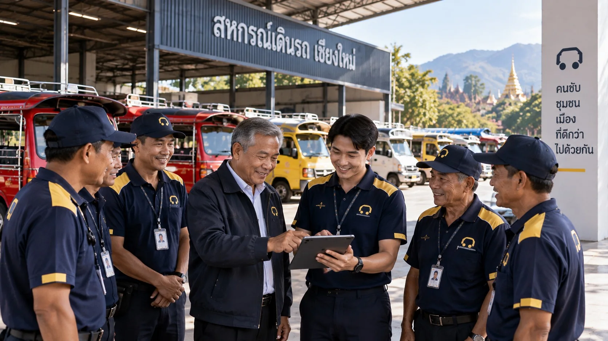

승객은 이제 휴대폰으로 차를 부릅니다
여행객과 젊은 세대는 요금이 투명하고 위치를 추적할 수 있는 앱 호출에 익숙합니다. 자체 시스템이 없는 협동조합은 공공차량 체계 밖의 차량에 승객을 빼앗기고 있습니다.
voyiro가 조합원에게 드리는 도움
- 대형 앱처럼 휴대폰으로 배차 수락
- 지역 호텔, 투어, 레스토랑에서 오는 승객 확보
- 투명한 요금으로 흥정과 민원 감소
- 현대적이고 신뢰받는 공공차량 이미지 구축
[입력 예정: ข้อมูลหรือตัวเลขรายได้สมาชิกที่ลดลงในพื้นที่ ถ้าต้องการอ้างอิง (ต้องมีแหล่งที่มา)]
조합원과 노선의 주인은 여전히 협동조합입니다
조합원 직접 승인
기사님은 협동조합의 승인을 받아야만 시스템에 들어올 수 있으며, 협동조합은 즉시 이용을 정지할 수 있습니다.
협동조합 모니터링 화면
조합원 차량 전체와 수락한 배차, 민원을 실시간으로 확인합니다.
협동조합 수익 배분
협동조합은 [입력 예정: สัดส่วนหรือจำนวนเงินที่สหกรณ์ได้ต่อเที่ยว]을(를) 받아 조합원 복지에 활용할 수 있습니다.
파트너 일감
voyiro가 지역 호텔, 투어, 레스토랑을 발굴해 조합원의 승객 공급처로 연결합니다.
투어 배차 관리
일일 대절 운행의 기사 배정은 협동조합의 순번과 규칙에 따라 협동조합이 맡습니다.
협동조합의 데이터
조합원 정보와 운행 통계는 협동조합의 소유입니다. [입력 예정: ยืนยันข้อตกลงความเป็นเจ้าของข้อมูลในสัญญา]
명확하게 나누고, 투명하게 확인합니다
| 업무 | 협동조합 | voyiro | 기사 |
|---|---|---|---|
| 조합원 모집 | 선발 및 승인 | 시스템에서 서류 재확인 | 서류 제출 |
| 면허 및 차량 등록 | 법규에 맞게 관리 | 만료 전 알림 | 기한 내 갱신 |
| 차량 호출 시스템 | 사용 | 개발, 유지보수, 서비스 제공 | 배차 수락 |
| 파트너 발굴 | 지역 파트너 추천 | 영업 및 계약 관리 | — |
| 민원 처리 | 조합원 징계 결정 | 민원 접수 및 증거 전달 | 소명 |
| 정산 | 협동조합 몫 수령 | 요금 수납, 영수증 발행, 각 주체에 지급 | 매주 정산 수령 |
한 화면에서 모든 조합원을 관리하세요
- 조합원 승인, 정지, 이력 조회
- 조합원 차량 실시간 지도
- 월별 운행, 수입, 협동조합 배분 리포트
- 민원 및 평점
- 일일 대절 투어 순번 관리
- 한 지역 내 여러 협동조합 지원

첫 미팅부터 서비스 개시까지
시범 운영 기간에는 협동조합의 시스템 이용료가 없습니다. [입력 예정: ระยะเวลานำร่องและเงื่อนไขหลังนำร่อง]
미팅
voyiro 팀이 협동조합을 방문해 시스템을 소개합니다.
협약 체결
MOU로 역할, 수익 배분, 시범 운영 기간을 정합니다.
조합원 등록
협동조합이 명단을 보내면 시스템에 등록해 드립니다.
교육
담당자와 기사님을 교육하고 QR 스티커를 부착합니다.
3개월 시범 운영
1개월차 운영 개시 · 2개월차 개선 · 3개월차 평가
확대
계속 이용 여부를 함께 결정합니다.
협동조합 회의용 자료
- 협동조합용 voyiro 소개 자료 [입력 예정: ไฟล์ PDF สำหรับดาวน์โหลด]
- 협력 협약서 샘플 [입력 예정: ร่าง MOU ที่ผ่านนักกฎหมายแล้ว]
- 협동조합 담당자 매뉴얼 [입력 예정: ไฟล์คู่มือ]
협동조합이 묻는 질문
voyiro가 협동조합 밖의 기사를 받아 조합원과 경쟁하게 하나요?
아닙니다. voyiro는 제휴 협동조합에 소속된 공공차량 기사님만 받습니다.
협동조합이 부담하는 비용이 있나요?
시범 운영 기간에는 시스템 이용료가 없습니다. [입력 예정: ค่าใช้จ่ายหลังนำร่อง ถ้ามี]
협력을 중단하고 싶으면 가능한가요?
[입력 예정: เงื่อนไขการยกเลิก ระยะเวลาแจ้งล่วงหน้า และการคืนข้อมูลสมาชิก]
휴대폰 사용이 익숙하지 않은 조합원은 어떻게 하나요?
voyiro 팀이 협동조합에서 직접 교육하며, 조합원이 이미 쓰고 있는 LINE으로 배차를 받습니다.
해외 기사 협회도 참여할 수 있나요?
네. voyiro는 라오스, 미얀마, 말레이시아와 아세안 국가로의 확장을 계획하고 있습니다. 해당 국가 법률에 맞는 협력 방식을 논의하려면 팀에 문의해 주세요.
한 지역의 여러 협동조합이 함께 이용할 수 있나요?
네. 시스템이 협동조합별로 조합원, 리포트, 수익 배분을 분리해 관리합니다.